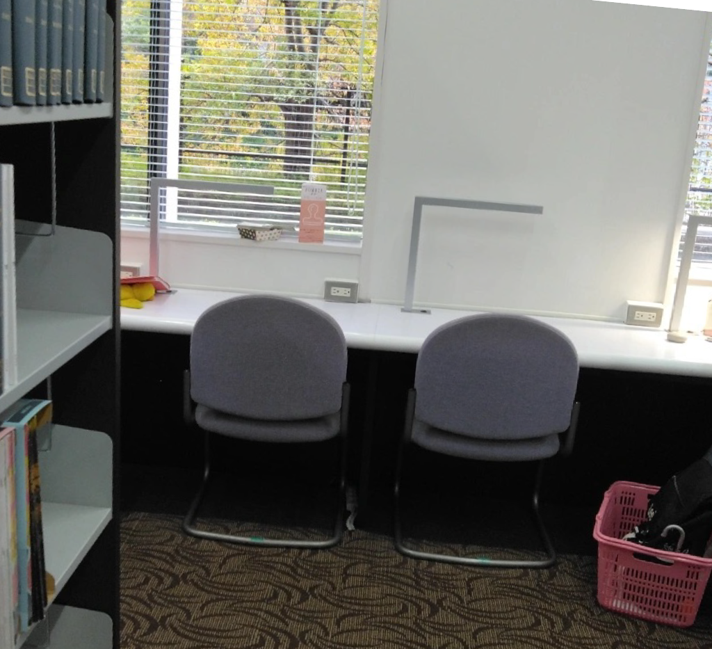
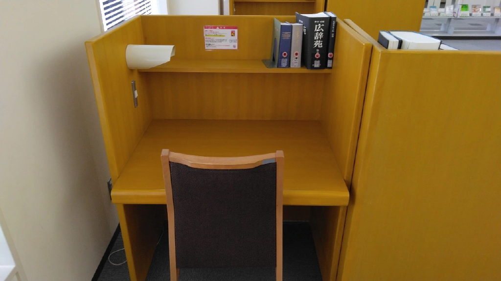
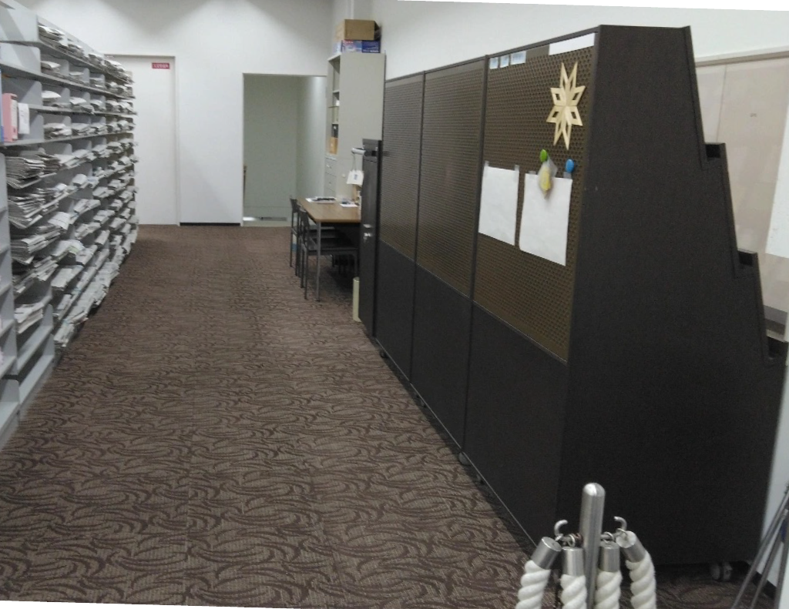
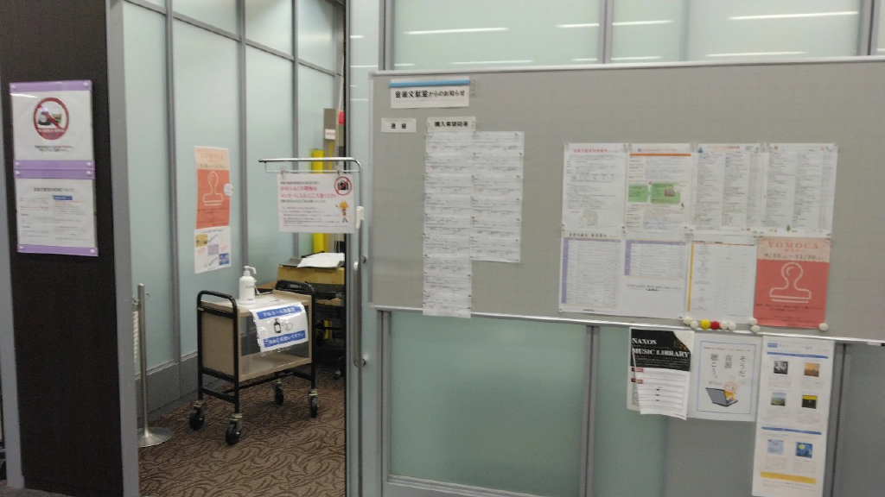

〜図書館マスターへの道〜
記者: 眞仁田 和
⼤学⽣活を送る上で⽋かせないことは…そう、勉強！
そして勉強する上で⽋かせないものは…そう、資料！
全ての道は図書館に通ず！使い⽅をレベルアップして君も図書館マスターになろう！
＜⾃習スペース＞
1階の⾃習スペースはアクセスの良さもあるが何よりコンセントが机のそばにあることから⼤⼈気！試験期間は早めに⾏かないとすぐに埋まっちゃうよ

2階の⾃習スペースは場所がきちんと区切られていてより集中できるよ
調べ物に向いている書籍は⼤体 2 階に置いてあるし⼀⼈⼀⼈の机が⼤きいからどれだけ資料を持ち込んでも余裕で広げられちゃうよ

＜閉架書庫＞
⼀階の貸し出しカウンターのすぐ隣に閉架書庫への⼊り⼝があるよ
地下へと続く階段を降りると 30 年以上前の雑誌のバックナンバーなどの研究図書がたくさんしまってあるんだ！
ただしここには 3 回⽣にならないと⼊れないよ
⼊りたい時にはカウンターで書類を書いて申し込もう！

＜⾳楽⽂献室＞
⾳楽⽂献室にはたくさんの楽譜や、⾳楽関連書がおいてあるよ
⼊室するときはロッカーに荷物を全て預けよう
⽣徒は利⽤期間が当⽇のみでとっても短いから返却忘れがないように注意しよう！

＜AV ライブラリー＞
映画だけでなく⾳楽、歴史、スポーツなど様々な映像・⾳声資料がおいてあるよ
CD は貸し出し可能だけど DVD は館内利⽤のみなのに注意
空きコマに友達とゆったり映画鑑賞したり、レポートの参考資料として利⽤したり活かし⽅は様々
今出川の AV 資料も取り寄せができるよ